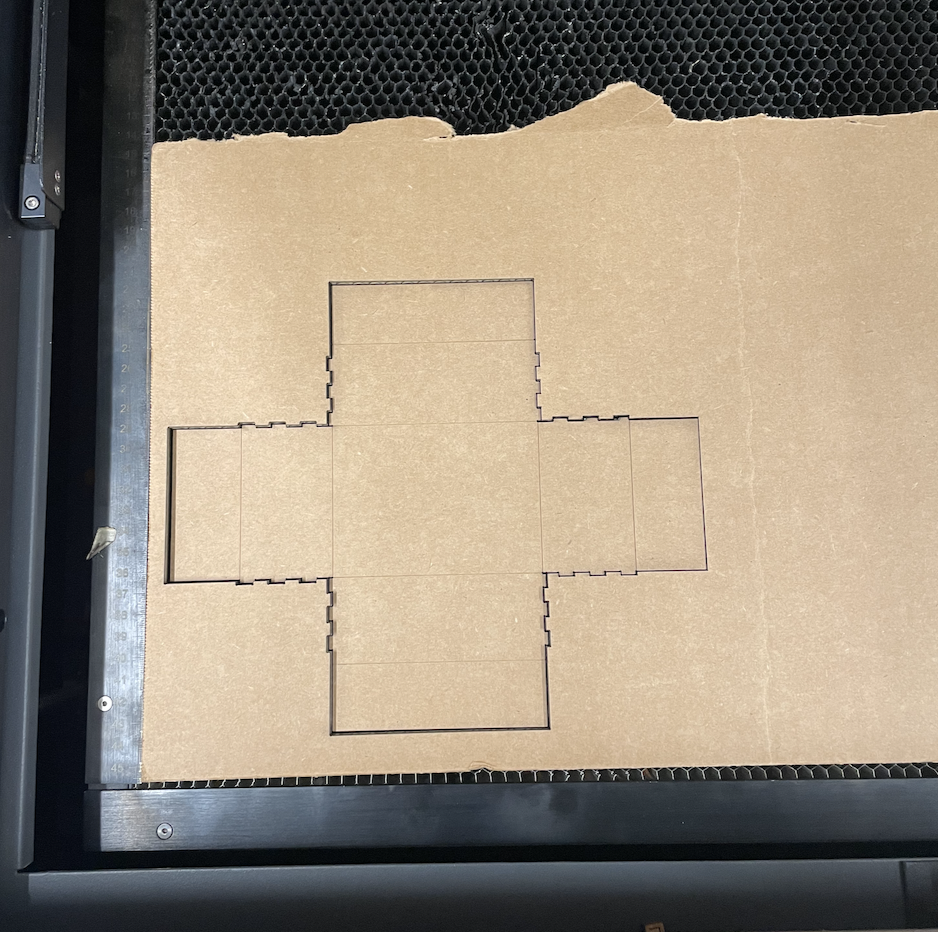

# measuring and modeling
# ---------------------------------
/week two: 2D design & cutting
# fusion 360 tutorial
# ---------------------------------
It became a running joke in the class about how I was box-less. It is true, I used a leftover Amazon box until the very last class. As an homage to the box that served me so well, I decided to model my finger-joint box after it.
This DXF file has been sitting in my laptop for 12 out of the 15 weeks of this course. What took me so long? Who knows. You can't rush quality.
The box is miniature due to a lack of cardboard available. The design was pretty simple, I just cut the outline of the box and scored the flaps. However, the score didn't go through very much so I had to do some post-processing (box cutter and hot glue). The Amazon detailing was done in permanent marker.

# measuring and modeling
# ---------------------------------